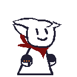
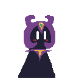
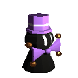

Tim
Sexo: Masculino
Especialidad: Artes marciales y peleas callejeras.
Gustos: El mate, dinero, los peinados.
Disgustos: Filosofía, ropa sin lavar, ganarse enemigos, el clasismo, y el vagabundo de la esquina.
Información General: Tim es un joven cualquiera, nacido en la calle. Desde niño, siempre ha disfrutado de los enfrentamientos cara a cara y gustaba en irse a trompadas con otros, lo que le permitió desarrollar un gran potencial para las artes marciales y la fuerza. Despertó inconsciente en una playa a las afueras del Bosque Choto, sin recordar nada de lo sucedido.
Personalidad: Es alguien despreocupado y paciente, en pocas ocasiones suele ser alguien interesado en bienes como lo puede ser la plata, pero es un buen chico y bien intencionado.
Polemis
Sexo: Desconocido
Especialidad: Militar y jardinería.
Gustos: Jardines, música suave, gatitos.
Disgustos: Los huevos, las arañas.
Información General: Nació de un huevo y fue adoptado por una mujer desconocida. Durante su infancia, fue ridiculizado por ser un niño que emergió de un huevo, lo que le inculcó un profundo desprecio hacia los huevos. Mas grandecito, se convirtió en soldado en su pueblo donde creció.
Personalidad: Es empático y optimista, siempre busca la mejor solución para los problemas y no se rinde fácilmente. Es a veces dormilón.
Timmy

Sexo: Masculino
Especialidad: Ingeniero en esencia (Electricista).
Gustos: El silencio, lugares oscuros, la tecnología.
Disgustos: Cuando estan chinguen y chinguen y chinguen y chinguen y chinguen y chinguen
Información General: No se sabe nada sobre el pasado de Timmy, solo es un electricista con bastante y amplio conocimiento en varios temas. Es bastante habil para construir dispositivos electrónicos y reparar cosas.
Personalidad: Es muy callado y monótono, siempre esta en constante calma. De las pocas veces que habla, es muy directo con lo que dice y de pocas palabras.
Gus
Sexo: Masculino
Especialidad: Mago
Gustos: El.
Disgustos: Val Valentino, El Mago Enmascarado.
Información General: Gus vive por y para la magia, siendo reconocido por ser alguien medio molesto pero carismático y definitivamente alguien habilidoso para la ilusión y apto para la magia real. Las malas lenguas dicen que, en realidad es alguien mucho más serio y crudo de lo que parece.
Personalidad: Es narcisista con cambios de humor repentinos, mayormente se comporta un poco infantil y sereno aunque a veces suele actuar un poco raro, extraño.